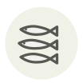

Smelt
Éperlan
| Latin name | Osmerus eperlanus |
|---|---|
| Family | Fish & seafood |
| Origin | Northern European estuaries |
| Season (France) | October – March |
| Flavour | Fresh · Delicate · Marine |
| Typical price (France) | 10–18 €/kg |
What it is
The genus name Osmerus comes from the Greek for odour: a fresh smelt smells of cut cucumber, and a smelt that smells of fish is no longer fresh. That single test is the whole of quality control at the stall.
In the kitchen
Do not gut them. Roll them in seasoned flour, shake off everything loose and fry at 190 °C for ninety seconds so the bones go crisp enough to eat — at 160 °C they turn greasy and the bones stay like wire.
Goes with
Lemon Parsley Salt Black pepper Dijon mustard Sunflower oil Cucumber
In season alongside
Halfbeak (sayori) Albacore Northern sweet shrimp Sweetfish (ayu) Baek-kimchi Nantucket bay scallop
Something wrong here, or missing? Tell us